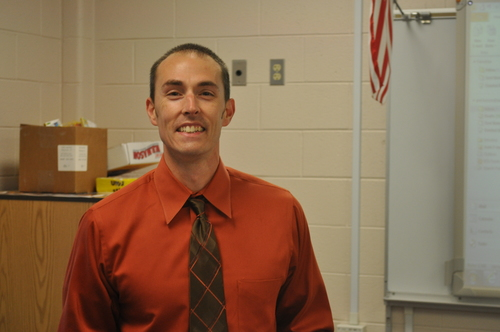
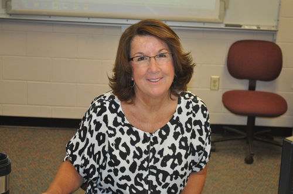

What is Squan-a-Thon?
Squanathon is a 12-hour overnight dance-a-thon for students of Manasquan High School that annually raises more than $100,000 for pediatric cancer.Each year participants exemplify the Manasquan Warrior Spirit, by fighting to stay up all night to put an end to cancer. Throughout this challenging night the participants honor those who fight this ongoing battle of cancer and celebrate the many that have surpassed this obstacle. Students are helping to save a life, to bring a smile and lend a helping hand to families dealing with the tragedy of cancer or other serious illnesses within our community. The MHS students truly make a sacrifice of their time and energy to help one another and that is something not easily done. This event allows giving back to be a positive experience.
Squan-a-Thon's Inspiration
Paul Battaglia
Mr. Battaglia started Squan-a-Thon for many reasons. The most important reasons were to change the culture at MHS and inspire students to challenge themselves to do more for others. Squan-a-Thon is a special cause that requires a tremendous amount of effort, passion, and creativity. It's this challenge that Mr. Battaglia enjoys the most. He uses his business background to come up with unique marketing and communications ideas to further promote Squan-a-Thon.
Pat McKenzie
Eleven years ago Mrs. McKenzie and Mr. Battaglia were discussing Penn State University's THON which is the largest philanthropic student run organization in the world. All money raised at THON is for pediatric cancer patients. Both Mr. Battaglia and Mrs. McKenzie's daughter Katie are graduates of Penn State and the desire began to create Squan-A-Thon in a similar fashion to THON. Squan-A-Thon is an event that is so special in that faculty, students, parents and community members get a chance to give back to those who are less fortunate than ourselves. There is nothing greater than giving to others. People will never remember what you do for yourself; they will always remember what you have done for others.